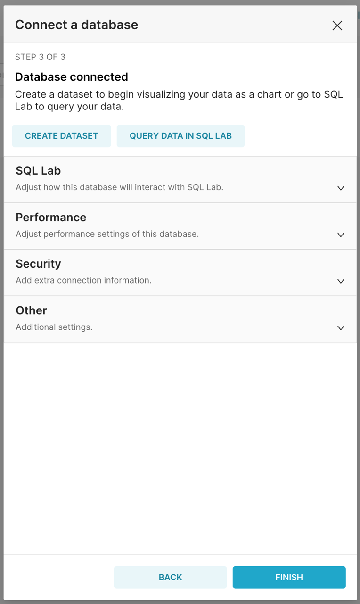

Apache Superset Demo
SQL LRS's Postgresql support enables BI solutions like Apache Superset to query the underlying SQL database. The SQL LRS project includes a Docker Compose file that can be used to demo this functionality.
Run the Docker Stack
The Docker Compose stack includes an LRS, Postgresql, Keycloak, Superset and Redis (used as a cache by Superset). A Keycloak instance controls access to both the LRS and Superset.
Note that for Keycloak to work (at least on Docker for Mac) you'll need to map your loopback IP to host.docker.internal so that Superset can reach Keycloak at an address that is also available to the host machine. This can be done by adding the following line to your /etc/hosts file (note you will need administrative/sudo access):
127.0.0.1 host.docker.internalTo run the demo:
cd dev-resources/superset_demo
docker compose up -dor
make superset-demoWait a minute or two for everything to start up.
Add xAPI data
You'll need some data to visualize. Hook up the xAPI-conformant Learning Record Provider (LRP) of your choice or use DATASIM to simulate learning activity:
git clone https://github.com/yetanalytics/datasim.git
cd datasim
docker run -v "$(pwd)"/dev-resources:/dev-resources \
-it \
--rm \
yetanalytics/datasim:latest \
-i /dev-resources/input/simple.json \
-E http://host.docker.internal:8080/xapi \
-U my_key \
-P my_secret \
generate post
Log In to Superset
Navigate to http://localhost:8088/:

Click "Login" and log in with the username dev_user and the password changeme123:

Add the SQL LRS Postgresql Database
Select "Database Connections" from the righthand menu:

You'll see an empty list of databases. Click "+ Database" on the right:

Select "PostgreSQL" in the list and proceed to the next screen:

Enter the following configuration:
| Field | Value | Notes |
|---|---|---|
| HOST | db | The docker-internal address of the Postgresql database |
| PORT | 5432 | |
| DATABASE NAME | lrsql_db | Specified in the Docker Compose file |
| USERNAME | lrsql_user | " |
| PASSWORD | lrsql_password | " |
| DISPLAY NAME | SQL LRS | Arbitrary name tag |
And click "CONNECT". You should see confirmation that the database is connected:

Click "FINISH" and the database is ready to explore with Superset.
Explore SQL LRS in SQL Lab:

Create a chart: